Tradiciones
En Catalunya, las tradiciones navideñas son un reflejo de la rica cultura popular del país. Entre ellas se encuentran los pastorets, las representaciones en vivo del Nacimiento y el tió, una combinación de magia, religiosidad y celebración en familia que hacen de las fiestas de Navidad un momento especial y único

Representaciones en vivo del Nacimiento
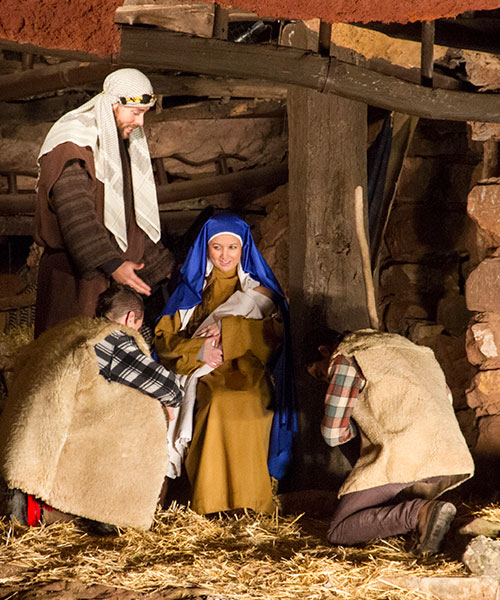
El Belén viviente de Corbera de Llobregat, considerado el primero de Catalunya, se representa desde los años sesenta en la Penya del Corb. Con más de 200 actores y un recorrido de 700 metros ofrece escenas navideñas integradas en el paisaje rocoso, creando una experiencia única.
(Foto: Albert Miró-Diputació Barcelona)
(Foto: Albert Miró-Diputació Barcelona)

La representación en vivo del Belén de Sant Fost, conocido por sus efectos especiales, combina escenas del Nacimiento de Jesús con la representación de antiguos oficios catalanes, como el botero y el herrero, además de leñadores y carboneras, pastores y cazadores.
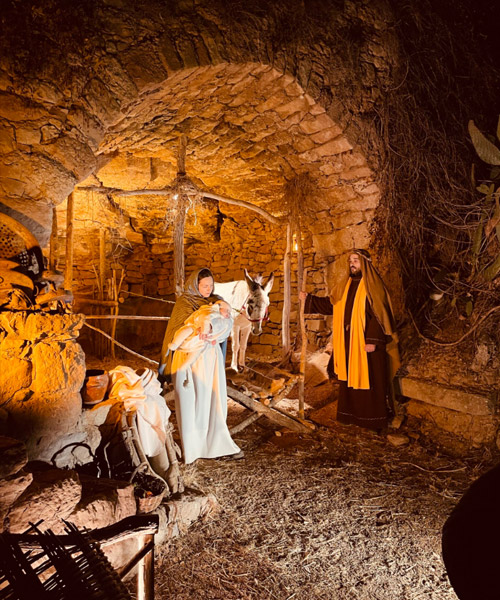
La representación del Belén del Bages, celebrado desde 1977 en las Torres de Fals, cuenta con 260 participantes que recrean escenas tradicionales con música e iluminación, y ofrece un espectáculo de gran prestigio y difusión.

Único Belén dentro de un monasterio medieval, ofrece un viaje al pasado con escenas recreadas por 100 actores, vestuario histórico y grandes efectos visuales. Además de las tradicionales escenas navideñas, los visitantes pueden descubrir oficios medievales y participar en un taller de danzas en el Jardín del Absis.
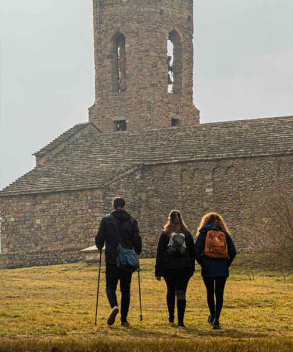
El Belén de Tona, que se representa desde 1972 en el parque de las Feixetes, en la falda de la cima del castillo, es una obra en movimiento. Hablado, con vestuario de época y música en directo y grabada. Una tradición que cautivaba a las familias año tras año.
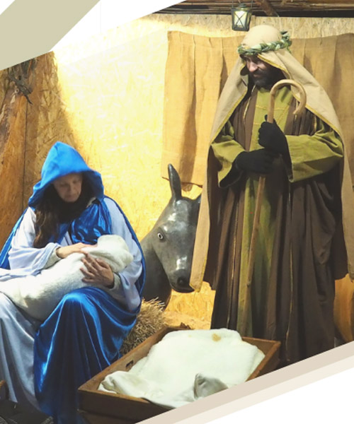
El IX Pesebre Viviente de Cànoves i Samalús, que tendrá lugar los días 6 y 7 de diciembre de 18 a 20 h, ofrece escenas bíblicas y tradicionales en un entorno natural. Además, el día 8 se celebrará el III Belén Viviente Infantil, con niños de 4 a 14 años como protagonistas, de 12 a 13 h.

Se representa desde 1987; el casco antiguo del pueblo se transforma en un auténtico escenario navideño. Esta representación combina escenas en movimiento y estáticas. Las calles empedradas y las vistas espectaculares de Rupit sirven de fondo natural.

Representado desde 2007, es un belén en movimiento con más de 200 figurantes, vestuario de época y música en directo. Se compone de varias escenas teatrales, como el Nacimiento y la lucha entre el bien y el mal. El recorrido comienza en la plaza de la Bassa d'en Llot y sigue por el centro antiguo.
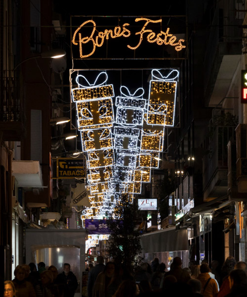
Calella ofrece varias muestras de pesebres: el de la ciudad, en el portal de la iglesia parroquial (13/12-2/2); la exposición de belenes y dioramas en el casal de la Amistat (21/12-5/1, cerrada en Navidad y Fin de Año), el alternativo en el centro parroquial (13/12-2/2) y el belén Playmobil en el Ayuntamiento Nuevo (13/12-6/1).
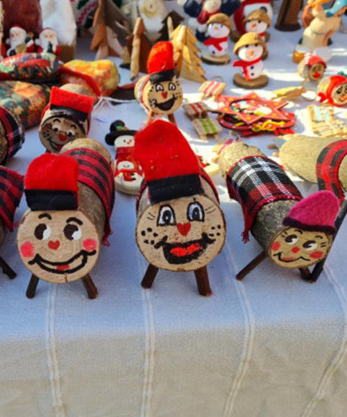
El centro histórico de Cabrianes se convierte en un pesebre viviente durante un día, con la participación de actores locales muy implicados. La actividad incluye una pequeña cata de productos locales –caldo, requesón, torta, embutidos, ratafía y pan con butifarra. Una experiencia navideña completa.
'Pastorets'
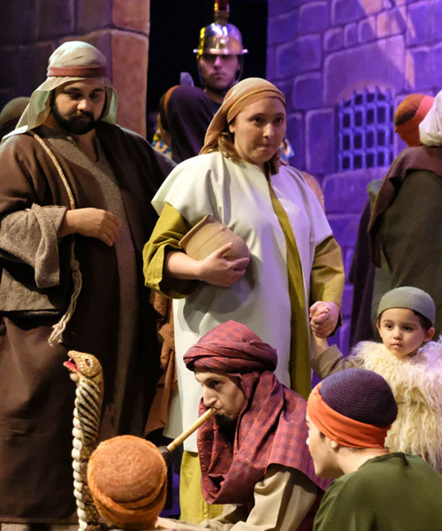
Els Pastorets de Mataró combinan tradición y modernidad con música en directo, bailes, cambios de escenografía y efectos especiales. Ofrecen un espectáculo vibrante y cautivador que conserva el espíritu de principios del s. XX con la fuerza y el ritmo que reclama el público del s. XXI.

Los Pastorets de Calaf, una tradición que data de 1925, son un espectáculo mágico y entrañable de casi tres horas que atrae a pequeños y mayores. Con más de 100 actores y 50 decorados, la representación ofrece una puesta en escena espectacular y sorprendente.

Escritos por Serafí Pitarra y representados desde 1900, los Pastorets de Berga ofrecen una versión casera y humilde de esta tradición. Con un trasfondo bíblico, el pueblo del Berguedà se convierte en el protagonista, haciendo de este espectáculo una experiencia cercana e identificativa para todos.
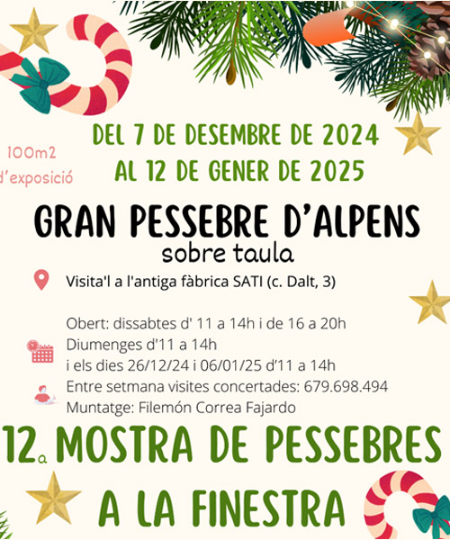
Desde escenas tradicionales hasta creaciones originales, cada ventana de Alpens cuenta una historia navideña diferente. Además de la Muestra de Pesebres en la Ventana, no te pierdas el gran pesebre, un montaje de más de 100 m².

La sede central de la Diputación de Barcelona, en el edificio de Can Serra, alberga la muestra Un pesebre napolitano del siglo XXI, una obra única del artista, figurinista y escenógrafo Josep Massagué. La pieza, cedida por el Museo Textil de Terrassa, combina tradición y contemporaneidad.
'Tions'
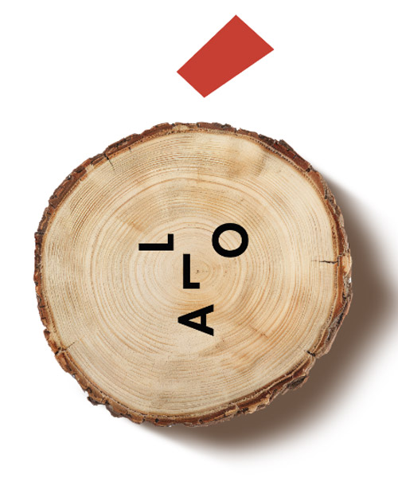
Implica a toda la población, con vecinos y comerciantes decorando las calles con tions originales. Los visitantes pueden participar en un juego de pistas para descubrir los tions expuestos. Se celebra un mercado navideño con productos locales. Una oportunidad para disfrutar del pueblo con familia y amigos.

Caçadors de Tions invita a crear un tió propio mientras se recorren las calles históricas del Poble Vell. Esta actividad familiar permite encontrar las piezas para construirlo y llevártelo a casa, viviendo una experiencia mágica y divertida.
Crea tu propio 'tió'
SúriaHasta el 21/12/2024

Santa Margarida i els Monjos ofrece una actividad mágica para descubrir los tions escondidos por los bosques, viñedos y calles. Eliges una ruta, sigues el mapa y los buscas en lugares asombrosos como árboles, balcones o matorrales ¡Una Navidad llena de naturaleza y diversión!
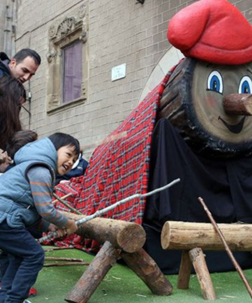
Fer cagar el tió es una tradición catalana vinculada a la fertilidad, que suele celebrarse en Nochebuena o el 25 de diciembre. En la feria de Santa Llúcia, frente a la catedral de Barcelona, un año más los niños y niñas menores de 12 años podrán hacer cagar a un tió gigante.
Otras
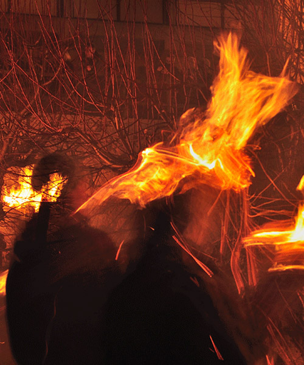
La Fiesta de la Fia-Faia, declarada patrimonio de la humanidad por la UNESCO, ilumina cada Nochebuena los pueblos de Bagà y Sant Julià de Cerdanyola. Con el canto Fia-Faia nostro senyor ha nascut a la paia, los vecinos encienden las faies (antorchas bajadas de la montaña) para celebrar el nacimiento de Jesús.
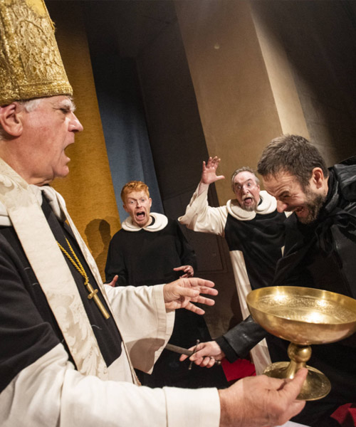
"Pedra i Sang" revive en el monasterio de Sant Cugat el asesinato del abad Biure la Nochebuena de 1350, enfrentado con el noble Saltells. Esta tragicomedia combina momentos de humor con escenas llenas de tensión y música en directo.

Se trata de una tradición centenaria en la que los vecinos buscan, cortan y decoran el pino más bonito para ofrecerlo a Santa Coloma. El árbol, transportado con carros de bueyes y acompañado de trabucos, se fija en la iglesia, adornado con manzanas y barquillos, en una celebración sorprendente y llena de magia.
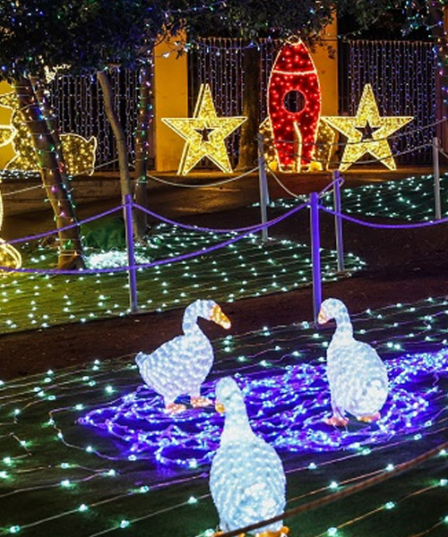
El Bosc Encantat, iluminado desde el 26 de noviembre, es un lugar mágico en la parte alta del parque de la Torre Lluc. Con 100.000 puntos de luz, este bosque es el acceso al Campamento Real, que puede visitarse durante las fiestas de 17 a 23 horas, y a partir del 2 de enero en el Museo.